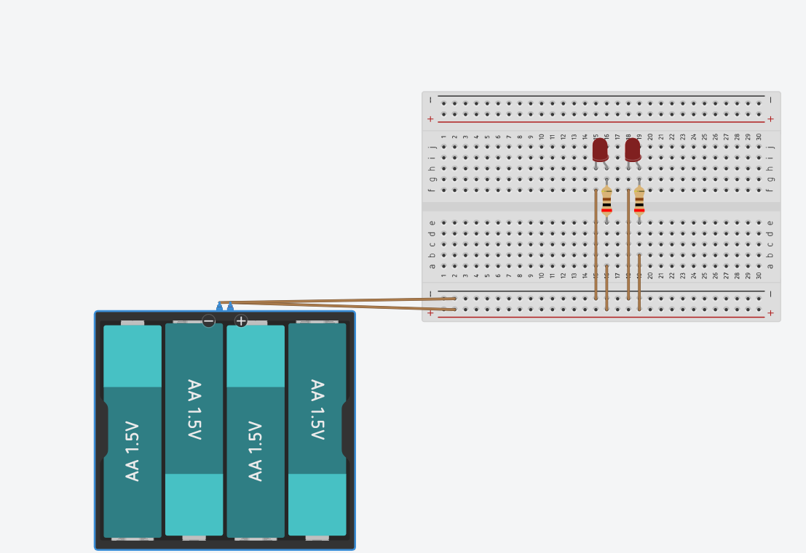

涵蓋半導體規格、標準 3V 單燈設計、多燈拓撲（串聯 vs 並聯深度對比）及動態試算
發光二極體 (LED) 具備指數型伏安特性 (I-V Curve)。當外加順向偏壓超過導通門檻 VF 後，電壓只要微幅增加 0.1V，通過的電流便會成倍暴增。若直接跨接於固定電壓源，電流將失控暴增、過熱燒毀。限流電阻的作用即在於吸收多餘電壓並穩定工作電流。
基準對象：通用 3mm / 5mm 直插式 (DIP) 與 0805 SMD 紅色發光二極體（材料通常為 AlGaInP 或 GaAsP）
| 規格參數 | 符號 | 典型值 (Typical) | 極限範圍 | 電路設計工程考量 |
|---|---|---|---|---|
| 順向工作電壓 | VF |
1.8 V ~ 2.0 V | 1.6 V ~ 2.2 V | 紅光波長長、能階差小，故 VF 低於藍/白光 (3.0~3.3V)。工程計算常以 2.0V 作為標準值。 |
| 建議工作電流 | IF |
10 mA ~ 15 mA | 5 mA ~ 20 mA | 一般狀態指示燈取 10 mA 即可獲得極佳亮度，且省電低溫。 |
| 最大連續額定電流 | IF(max) |
20 mA | 25 mA ~ 30 mA | 絕對上限值。長時操作不得超出此值，否則會造成快速光衰與永久損毀。 |
| 逆向崩潰耐壓 | VR |
5.0 V | 最大 5 V | LED 的逆向耐壓極低（約 5V）。不可承受過大反向電壓，否則易擊穿。 |
| 發光主波長 | λD |
625 nm | 620 nm ~ 635 nm | 標準純紅色（660 nm 則為深紅 / 超高亮紅光）。 |
| 發光視角 (半值角) | 2θ1/2 |
60° ~ 120° (霧面) 20° ~ 30° (透明) |
- | 霧狀膠體適合寬視角狀態指示；高透聚光膠體適合定向照明。 |
| 工作溫度範圍 | Topr |
-25°C ~ +85°C | -40°C ~ +100°C | 具負溫度係數（溫度升高約 -2mV/°C，高溫時 VF 會略微降低）。 |
VR = 3.0V - 2.0V = 1.0V，由電阻承擔剩餘的 1.0V 電壓。
| 應用情境模式 | 目標電流 (IF) | 理論阻值 | 市售標準電阻 (E24) | 四環色碼標示 | 工程評估 |
|---|---|---|---|---|---|
| 標準節能 / 狀態指示 | 10 mA | 100.0 Ω | 100 Ω | 棕 黑 棕 金 | 最佳平衡 ★★★ |
| 清晰高亮模式 | 15 mA | 66.7 Ω | 68 Ω | 藍 灰 黑 金 | 日間清晰 ★★ |
| 極限高亮模式 | 20 mA | 50.0 Ω | 51 Ω | 綠 棕 黑 金 | 發熱偏高 ★ |
以 10mA、分壓 1.0V 計算：
P = VR × IF = 1.0V × 0.01A = 0.01W (10 mW)
市面上最常見的 1/4W (0.25W = 250mW) 或 1/8W (125mW) 碳膜電阻負載率僅 4%~8%，發熱極微，安全耐久。
• 2 顆乾電池 (AA/AAA 串聯, ~3V)：內阻極小 (<1Ω)，嚴格依照 100 Ω 設計。
• CR2032 鈕扣鋰電池 (3V)：自身內阻較大（約 10~30Ω），會分擔部分電壓，接 100Ω 依然可亮，若嫌偏暗可降為 47Ω~68Ω。
• 串聯總順向導通電壓：
兩顆紅色 LED 串聯，總壓降為 VLED_總 = VF1 + VF2 = 2.0V + 2.0V = 4.0V（即使以極限低壓 1.8V 估計，亦需 3.6V）。
• 電壓不足困境：
若電源維持原本的 3.0V，因 3.0V < 3.6V ~ 4.0V，電源電壓小於 LED 導通電位障壁，兩顆 LED 完全無法點亮！
VCC = 5.0V，VF_total = 4.0V，目標電流 IF = 10 mA = 0.01 A。
VR = 5.0V - 4.0V = 1.0V。
R = 1.0V / 0.01A = 100 Ω（E24 標準阻值：100 Ω，棕黑棕金）。
PR = 1.0V × 0.01A = 10 mW（選用 1/4W 碳膜電阻極度安全）。
在並聯電路中，所有支路跨接相同電源電壓 (VCC = 3.0V)。由於單顆紅色 LED 導通電壓僅 2.0V，只要 VCC > VF (3.0V > 2.0V)，無論並聯 2 顆、3 顆甚至 10 顆 LED，每條支路都能獲得足夠電壓順利導通！
初學者常試圖將兩顆 LED 直接並聯，然後只串聯「一顆」50Ω 電阻。這在電子工程中屬於嚴重失誤！
工程黃金法則：「每條 LED 支路必須擁有自己專屬的限流電阻」。
R1 = R2 = R3 = (3.0V - 2.0V) / 0.01A = 100 Ω（市售 100Ω，色碼：棕黑棕金）。10 mA，亮度完全均勻一致。Itotal = IF1 + IF2 + IF3 = 10mA + 10mA + 10mA = 30 mA (0.03A)
Ptotal = VCC × Itotal = 3.0V × 0.03A = 90 mW (0.09W)。續航時間 ≈ 2000 mAh / 30 mA ≈ 66.7 小時。
假設採用 2 顆同型號紅色 LED（單顆標稱順向壓降 VF = 2.0V，設計工作電流 IF = 10mA），對比下述三種電路接法在電壓、電流與實際物理現象上的根本差異：
| 比較維度 / 項目 | 🅰️ 2 顆 LED 串聯 (5.0V 供電, 100Ω 電阻) |
🅱️ 2 顆 LED 獨立並聯 (正確) (3.0V 供電, 雙 100Ω 電阻) |
🆂 2 顆 LED 共用並聯 (錯誤) (3.0V 供電, 單 50Ω 電阻) |
|---|---|---|---|
| 電源電壓 (VCC) | 5.0 V (需高於 4.0V) |
3.0 V (高於 2.0V 即可) |
3.0 V |
| LED 1 兩端跨壓 (VL1) | 2.0 V |
2.0 V |
被拉低至 ~1.95 V |
| LED 2 兩端跨壓 (VL2) | 2.0 V |
2.0 V |
被強迫跨接 ~1.95 V |
| 限流電阻分壓 (VR) | VR = 5.0V - 4.0V = 1.0 V |
VR1 = VR2 = 3.0V - 2.0V = 1.0 V |
VR = 3.0V - 1.95V = 1.05 V |
| 流經 LED 1 電流 (IL1) | 10.0 mA |
10.0 mA |
~17.0 mA (搶走大部分電流) |
| 流經 LED 2 電流 (IL2) | 10.0 mA |
10.0 mA |
~3.0 mA (分配極微電流) |
| 電源提供總電流 (Itotal) | 10.0 mA (迴路電流相同) |
20.0 mA (兩支路 10mA 相加) |
20.0 mA |
| 總系統功耗 (Ptotal) | 50.0 mW (5V × 10mA) |
60.0 mW (3V × 20mA) |
60.0 mW (3V × 20mA) |
| 💡 視覺發光現象 | 兩顆亮度極度均勻且穩定 | 兩顆亮度穩定且均勻 | LED1 過亮發熱，LED2 昏暗或不亮 |
| ⚠️ 單顆開路燒毀影響 | LED1 燒毀，兩顆同時熄滅 | LED1 燒毀，LED2 正常恆亮 | LED1 燒毀後，電流全部轉給 LED2（本例約 20mA 已達上限，電阻更小時易連鎖燒毀） |
| 🔋 電源降至 3.0V 現象 | 因 3V < 4V，兩顆同時熄滅 | 完全正常發光 | 高機率發熱失控 |
• 好處： 節省總電流（只需 10mA），能效極高，且兩顆電流絕對相等，亮度百分百一致。
• 代價： 電壓需求高（2 × 2.0V = 4.0V），在 3V 電源下必定熄滅。
• 好處： 3.0V 低壓即可完美點亮兩顆，且獨立支路互不干擾，一顆壞掉另一顆依然正常工作。
• 代價： 電源總電流倍增為 20mA（耗電翻倍），且需使用 2 顆獨立電阻。
支援自訂電源、順向電壓、LED 顆數及「串聯 / 並聯」拓撲切換，自動匹配 E24 市售電阻與色碼：
下圖為 2026-09-08 完成的 4-AA 電池驅動雙紅色 LED 獨立並聯麵包板電路實作圖：

▲ 圖 7.1：4 顆 AA 電池 (6V) 驅動雙紅色 LED 之獨立限流電阻並聯麵包板電路 (檔案：20260908.jpg)
VCC = 4 × 1.5V = 6.0V。正極 (紅線) 與負極 (棕/黑線) 分別接入麵包板上方之公用電源軌 (+ / -)。| 參數項目 | 公式與計算 | 實測/理論數值 | 工程評估與建議 |
|---|---|---|---|
| 電源電壓 (VCC) | 4 × 1.5V 電池盒 | 6.0 V |
電壓充裕；但電池衰減至 4.5V 時，1kΩ 支路電流約降為 2.5 mA（-37%），亮度會明顯變暗。 |
| LED 順向壓降 (VF) | 紅色 LED 標稱壓降 | 2.0 V |
標準半導體順向導通電位障壁。 |
| 限流電阻壓降 (VR) | VCC - VF = 6.0V - 2.0V | 4.0 V |
電阻分擔 4.0V 電壓。 |
| 限流電阻值 (R) | 圖中色碼（棕黑紅金） | 1 kΩ (1000 Ω) |
若使用 1kΩ，支路電流約 4.0 mA (發光清晰且極度省電)。 |
| 高亮模式推薦電阻 | 目標 IF = 10mA (4.0V / 0.01A) | 390 Ω ~ 470 Ω |
若需標準高亮指示，可更換為 390Ω (E24) 或 470Ω 電阻。 |
| 電源總需求電流 | Itotal = IL1 + IL2 | 8.0 mA (以 1kΩ 計) |
2000mAh AA 電池續航可達約 250 小時！ |
| 電阻單顆功耗 | PR = 4.0V × 4.0mA | 16 mW (0.016 W) |
遠低於 1/4W (250mW) 碳膜電阻極限，低溫無發熱隱患。 |
模型/Agent: Claude Opus 5.5 (claude-opus-5-5) / Claude Code
Prompt 原文:
檢視所有檔案內容中的敘述與說明，確認概念與敘述的正確性
修正後，將修改內容，附加在每個檔案的最下方區塊並標誌時間戳記與模型代號
確認概念與解釋說明都是正確的變更摘要: 全面檢視概念與敘述正確性並修正：